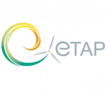

The 10th ETAP Forum on Eco-Innovation will bring together key players in business, academia, finance, policy and green groups. It will present business case studies on sustainable material management, encourage innovation through cross fertilisation between disciplines and sectors, identify and prioritise the key issues that need to be addressed by Government and EU action. The Forum will propose priority areas for future action on material security and resource efficiency and play a key part in securing research through Research Councils and EU calls.
In a world where the population is expected to exceed 9 billion by 2050, and where there is increasing international competition for resources of all kinds, a major market opportunity exists for the development of products and services that make better use of natural resources. Europe's "Innovation Union" policy embraces the concept of green growth, recognizing that we need to find ways to enhance economic growth at the same time as reducing our dependency on resources which are being used unsustainably. To do this, we must support environmental innovation, paving the way for sustainable solutions and new business models to become embedded in modern entrepreneurship and become part of the consumer culture.
The issues of material security and sustainable material management have grown in prominence recently. While a number of countries around the world are resorting to strategic stockpiling of raw materials, the EU response is more positive, with the Belgian presidency’s focus on ‘Sustainable Material Management’ and the focus of EU eco-innovation shifting towards a dematerialisation of the economy. A sustainable resource policy will establish an economy which uses finite and renewable resources efficiently and responsibly, recycles strategically important materials and develops alternatives to the consumption of scarce resources or materials which cause high environmental impacts during extraction, use and disposal.
The forum will cover key issues such as:
- The market and legal frameworks necessary to support a resource efficient economy;
- (Eco)-Innovations that address material security (substitution, minimisation of material use, closing loops, etc) and reduce environmental impacts;
- Case studies and practical experiences from companies that have recognised the commercial opportunity presented by resource efficiency;
- The role of green procurement in the public and private sector to promote resource efficiency.
Please note that attendance at the Forum is upon registration only and that the European Commission does not reimburse any expenses. For the programme, more information and to register, please click here .
Please use the following login and password to register:
Login: ETAP
Password: RESOURCE